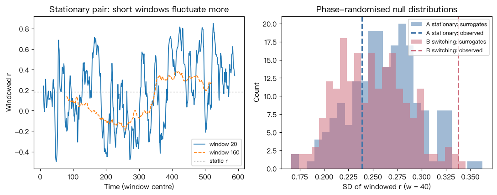

Example02 / 11
窗长的权衡与相位随机化零模型
- 对平稳信号 A，比较窗长 20、40、80、160 下窗口相关的标准差：窗越短，波动越大。
- 多元相位随机化：两个通道乘以同一组随机相位，保留各自功率谱和静态相关、破坏非平稳结构； 以“窗口相关的标准差”为检验统计量，用 200 组替代数据构造零分布并给出经验 p 值。 输出解读：A 的观测值不超出零分布（没有超出平稳预期的“动态”）；B 明显超出。 拒绝零假设只说明偏离了“平稳、线性、高斯”，真实数据中还需排除头动和觉醒水平等来源。
Output输出图

Output文字输出
窗长 20：A 的窗口相关标准差 = 0.319 窗长 40：A 的窗口相关标准差 = 0.239 窗长 80：A 的窗口相关标准差 = 0.201 窗长 160：A 的窗口相关标准差 = 0.179 A 平稳：观测标准差 0.239，零分布 95% 分位 0.323，p ≈ 0.756 B 切换：观测标准差 0.338，零分布 95% 分位 0.303，p ≈ 0.010
Code代码
# (a) 对平稳信号 A，比较窗长 20、40、80、160 下窗口相关的标准差：窗越短，波动越大。
# (b) 多元相位随机化：两个通道乘以同一组随机相位，保留各自功率谱和静态相关、破坏非平稳结构；
# 以“窗口相关的标准差”为检验统计量，用 200 组替代数据构造零分布并给出经验 p 值。
# 输出解读：A 的观测值不超出零分布（没有超出平稳预期的“动态”）；B 明显超出。
# 拒绝零假设只说明偏离了“平稳、线性、高斯”，真实数据中还需排除头动和觉醒水平等来源。
import numpy as np
from numpy.lib.stride_tricks import sliding_window_view
def ar1_smooth(e, phi=0.8):
out = np.zeros_like(e)
for t in range(1, e.shape[-1]):
out[..., t] = phi * out[..., t - 1] + e[..., t]
return out
def correlated_pair(rho, T, rng):
z = rng.standard_normal((2, T))
return ar1_smooth(np.vstack([z[0], rho * z[0] + np.sqrt(1 - rho ** 2) * z[1]]))
def sliding_corr(x, y, w, step=1):
xw = sliding_window_view(x, w)[::step]
yw = sliding_window_view(y, w)[::step]
xc = xw - xw.mean(axis=1, keepdims=True)
yc = yw - yw.mean(axis=1, keepdims=True)
return (xc * yc).sum(1) / np.sqrt((xc ** 2).sum(1) * (yc ** 2).sum(1))
def phase_randomize(X, rng):
"""多元相位随机化替代数据：所有通道共用同一组随机相位。"""
T = X.shape[1]
F = np.fft.rfft(X, axis=1)
phi = rng.uniform(0, 2 * np.pi, F.shape[1])
phi[0] = 0 # 直流分量相位不变（保留均值）
if T % 2 == 0:
phi[-1] = 0 # 偶数长度时奈奎斯特频率相位不变，保证逆变换为实数
return np.fft.irfft(F * np.exp(1j * phi), n=T, axis=1)
rng = np.random.default_rng(1)
A = correlated_pair(0.3, 600, rng) # 模拟数据，仅用于演示方法
B = np.hstack([correlated_pair(0.7, 300, rng), correlated_pair(0.0, 300, rng)])
for w in [20, 40, 80, 160]:
print(f"窗长 {w:3d}：A 的窗口相关标准差 = {sliding_corr(A[0], A[1], w).std():.3f}")
w, n_surr = 40, 200
null_res = [] # 记录观测值与零分布，供作图
for name, X in [("A 平稳", A), ("B 切换", B)]:
obs = sliding_corr(X[0], X[1], w).std()
null = np.array([sliding_corr(*phase_randomize(X, rng), w).std() for _ in range(n_surr)])
p = (np.sum(null >= obs) + 1) / (n_surr + 1)
print(f"{name}：观测标准差 {obs:.3f}，零分布 95% 分位 {np.quantile(null, 0.95):.3f}，p ≈ {p:.3f}")
null_res.append((obs, null))
import matplotlib.pyplot as plt
fig, axes = plt.subplots(1, 2, figsize=(10, 4))
for ww, ls in [(20, "-"), (160, "--")]:
r = sliding_corr(A[0], A[1], ww)
axes[0].plot(np.arange(len(r)) + ww // 2, r, ls, lw=1.2, label=f"window {ww}")
axes[0].axhline(np.corrcoef(A)[0, 1], color="k", lw=0.8, ls=":", label="static r")
axes[0].set(xlabel="Time (window centre)", ylabel="Windowed r", title="Stationary pair: short windows fluctuate more")
axes[0].legend(fontsize=8)
for (obs, null), lab, col in zip(null_res, ["A stationary", "B switching"], ["#4477AA", "#CC6677"]):
axes[1].hist(null, bins=25, alpha=0.5, color=col, label=f"{lab}: surrogates")
axes[1].axvline(obs, color=col, lw=2, ls="--", label=f"{lab}: observed")
axes[1].set(xlabel="SD of windowed r (w = 40)", ylabel="Count", title="Phase-randomised null distributions")
axes[1].legend(fontsize=8)
plt.tight_layout(); plt.show()Run在浏览器中运行
首次加载 Python 环境约需 20–40 秒；可以修改参数后重新运行。